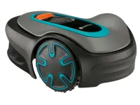
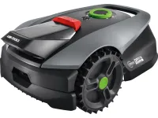
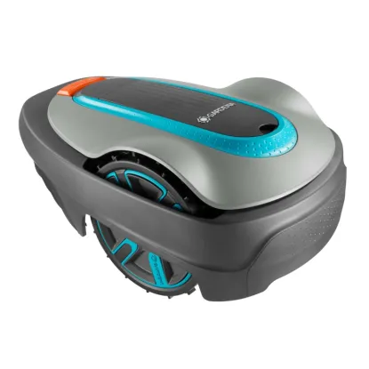
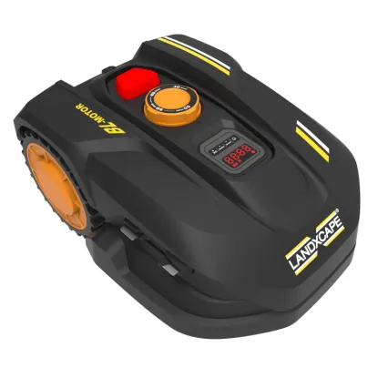
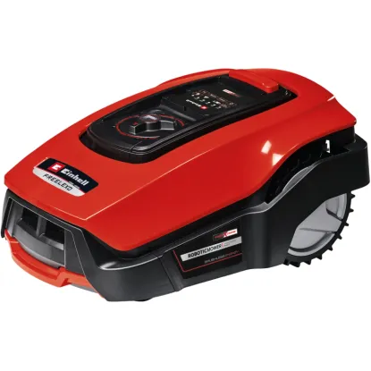
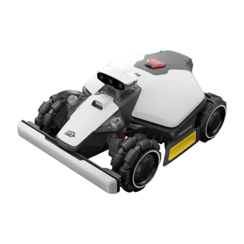

A Gardena Sileno minimo robotfűnyíró kis méretű és komplex, legfeljebb 250 négyzetméteres gyepfelületek teljesen automata, megbízható nyírására alkalmas, amelyet nagy pontossággal és számos funkció segítségével végez el.

A LUX-TOOLS Oryx 300 Vision A-RMR-300-26 robotfűnyíróval a legmodernebb technológiát viheti kertjébe, és a határolóvezetékek fárasztó lefektetését is megspórolhatja.

Halk üzem, sokoldalúság és intelligens kivitel jellemzi a Gardena Sileno city 400 m2 robotfűnyírót. A Sileno city ideális kisebb méretű gyepekhez, ötvözi a nagy teljesítményt a kényelmes fűnyírással.

A LandXcape egy olyan kisméretű kerti segédeszköz, amely legfeljebb 600 négyzetméteres gyepfelületen nyírja le könnyedén a füvet. Alacsony zajszintje miatt sem Önt, sem szomszédait nem zavarja a robotfűnyíró munkája..

Az Einhell Freelexo 400 BT robotfűnyíró nélkülözhetetlen segítőtárs, ha a gyep megfelelő gondozásáról van szó. A robotfűnyírót legfeljebb 400 négyzetméteres felületre tervezték, és a fűnyírást automatikusan elvégzi Ön helyett.

Mammotion LUBA mini 2 AWD 1000 - Határolóvezeték nélküli robotfűnyíró minden terepre. 1000 m2 maximális munkaterület. Triple-Camera AI Vision + NetRTK / iNavi navigáció, összkerékmeghajtás (AWD), 80% (38°) emelkedőképesség, 1+1 vágótárcsás rendszer (200 mm + 120 mm)